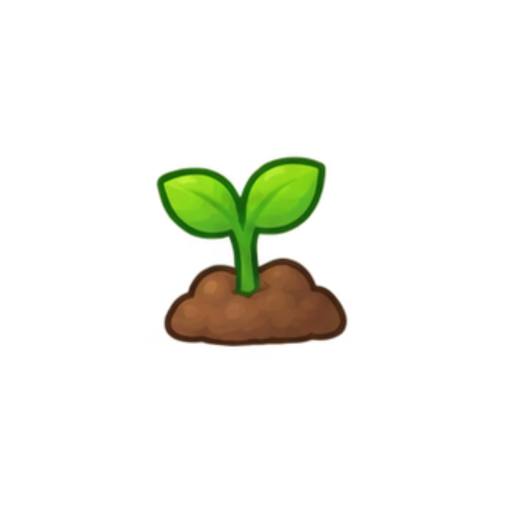

📍
☀️ 맑음 · 21°C
따스한 햇살과 적당한 바람이 불어 식물이 자라기 좋은 날씨입니다.

🌱'">
MINT GARDEN · DAILY FORTUNE
오늘의 씨앗이 도착했어요
하루에 한 번, 실시간 날씨의 영향을 받는 나만의 식물을 심고 키워보세요.
75초 동안 물과 햇빛, 거름을 조절해 수확해보세요!
💡 정원사 수칙
• 게이지의 초록색 안전 구간을 유지해야 건강하게 자랍니다.
• 중간에 나타나는 해충은 터치해서 바로 잡아주세요!
• 수확할 때까지 어떤 식물이 자랄지는 비밀입니다.
비밀 씨앗
📍 서울특별시
1단계: 흙 속에서 깨어나는 중
수확까지 남은 시간
01:15
☂️ 차광막 작동 중 (햇빛 차단)
📍 서울특별시 · ☀️ 21°C
⚠️ 수분 부족!

MINT GARDEN
💧 수분
적정 (50%)
☀️ 일조량
적정 (55%)
🧪 거름(영양)
적정 (50%)
과일 · 서울특별시
육성: 상태 좋음
붉은 장미
정성 어린 관리로 건강하게 수확했습니다!
🔮
MINT GARDEN
오늘의 민트가든 운세
정성껏 가꾼 씨앗이 찬란한 결실을 맺듯, 오늘 당신이 공들인 일에서도 기대 이상의 보상이 찾아옵니다.
행운의 컬러
로즈 레드
행운의 아이템
향수
오늘의 정원 가꾸기를 완료했습니다. 내일 새로운 날씨와 함께 다시 찾아오세요! 🌙
나의 식물 도감
지금까지 수확한 민트가든 식물 기록입니다.